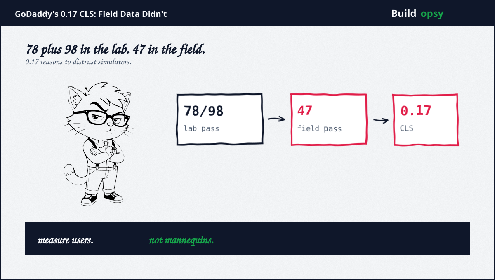
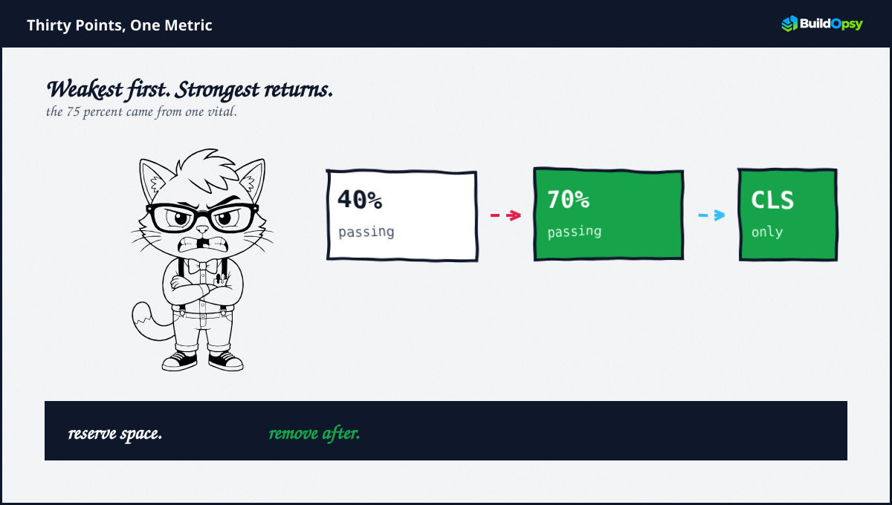

1. The Thesis, Repeated With Force
My Swappie file argued speed is respect. This file argues the corollary: respect cannot be measured in a simulator. A lab renders one page, once, on steady hardware, with nobody touching it. Visitors scroll, rotate, pinch, and rage-tap on buses. Any metric blind to thumbs is marketing with a viewport. GoDaddy learned the difference across millions of small-business sites, which makes their numbers the most democratic evidence in this series.
The principle in one line: optimize the worst number your visitors produce, not the best number your lab reports. Everything below is that sentence, itemized.
2. The Mirage
Years of Lighthouse work had produced genuinely good lab numbers. Largest paint at the 75th percentile sat near 860ms. Interaction delay sat under 10ms. Pass rates of 78 and 98 percent respectively. Any team would frame those slides. Any executive would approve the roadmap that produced them. The lab had applauded so consistently that applause became the strategy.
Then the team added the web-vitals library to customer sites and watched real devices on real networks with real thumbs. Paint stayed respectable. Interaction stayed excellent. Layout shift arrived at 0.17 against a 0.10 bar, with a 47 percent pass rate. The overall pass rate across all three vitals sat at 40 percent. Two green scores and one red score equals a red product. The mirage was not that the lab lied. It is that nobody asked what the lab cannot see: scrolled pages, rotated phones, and content arriving late.

3. The Indictment
Layout shift is the rudest vital because it punishes reading itself. Text jumps under eyes. Buttons dodge thumbs. Users lose their place and blame themselves first, the site second, with the blame arriving in order of politeness rather than fault. A 0.17 means the average visit contained visible, felt instability. At millions of sites, that number represents an ocean of micro-irritation no Lighthouse run will ever surface, because Lighthouse never reads.
The team set the only correct goal: weakest link first, with a number and a date. Above 60 percent overall by end of August, driven entirely through layout stability. Notice what they did not do. No replatforming. No framework migration. No performance task force with branded hoodies. One metric, one deadline, and the humility to admit the lab had been grading the wrong exam.
4. The Treatment
The fixes read almost insultingly simple, which is precisely why most teams skip them for cleverer projects. Reserve space for loading images so content below stops jumping. Wrap dynamic components in min-height containers sized from observed averages, releasing the constraint once inner content finishes rendering. Both techniques share one insight: instability is just space arriving late, so arrive with the space first.
What elevates this case from checklist to craft: honest trial and error, admitted in print. Not every attempt worked. The team says so directly, which paradoxically raises my trust in the attempts that did. Measurement stayed in the field throughout, so each fix proved itself against visitors rather than simulators. Process again is the product. Min-height containers are commodity. The courage to chase one ugly number is the moat.
5. The Receipt
Overall pass rate climbed from around 40 percent to almost 70 percent, a 75 percent relative improvement, carried almost entirely by layout stability. Republished customer sites inherited the fixes automatically, so the number keeps compounding as owners update. One vital. Thirty points. Millions of storefronts steadied.
78 and 98 in the lab. 47 in the field.Paraphrase of reported GoDaddy case results, via web.dev (not a verbatim source quote)
Place this receipt beside the Swappie file from my last postmortem. One team fixed paint first, one fixed stability first. Both won by fixing their own weakest vital rather than the industry fashionable one. The pattern replicates because the principle travels: measure visitors, find the worst number, fix only it until it is not worst anymore.
6. What to Steal
First, instrument the field before trusting the lab. Ship the web-vitals library to real traffic. Let thumbs vote. Demote every lab-only scoreboard to advisory status.
Second, rank vitals by visitor pain, then fix strictly in that order. Layout shift that steals reading beats paint delays that merely bore. Weakest first is a strategy, not a slogan.
Third, reserve space as a default, not a fix. Images, ads, and dynamic components all arrive late by nature. Design the hole before the content, everywhere, always.
Fourth, publish the misses alongside the wins. Trial and error, admitted, builds more institutional trust than a perfect record nobody believes.
7. The Verdict
I opened with a repeated thesis and close with its second receipt. Respect cannot be simulated. GoDaddy proved it across more sites than most engineers will touch in a career, using techniques any junior can implement before lunch. The barrier was never knowledge. It was the willingness to believe an ugly field number over a beautiful lab score.
The question I leave every team: which of your green scores would survive contact with a bus ride? Until field data answers, you are decorating, not engineering. Measure thumbs. Fix the weakest. Applaud later.
40 percent. One vital. 70 percent. The lab never saw it.
Sources and Method
This postmortem follows the web.dev GoDaddy case study and GoDaddy engineering confirmation. Scores and techniques come from the published accounts.